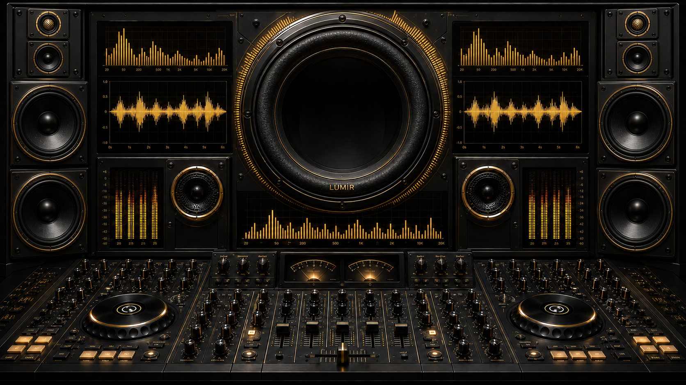

DEBUG COMPONENT MAP
Native 1672 × 941 · M to toggle
TARGET PROOF: OFF
700 ms ON · 250 ms GAP · NO AUDIO
LOAD
PREV
PLAY
NEXT
REPEAT: OFF
SHUFFLE
NO TRACK LOADED · 00:00 / 00:00
PLAYLIST
CENTER
LIGHTS
SETTINGS
FULLSCREEN
LIGHTING
×
SPEAKER LIGHTS
MODE
OFF
STATIC
SLOW CYCLE
STATIC COLOR
GOLD
AMBER
DEEP VIOLET
COSMIC BLUE
CYCLE SPEED
BRIGHTNESS
CONSOLE ACTIVITY
ACTIVITY AMOUNT
CENTER STANDBY
BASS GLOW
MODULAR VISUAL CORE · CANVAS / WEBGL READY